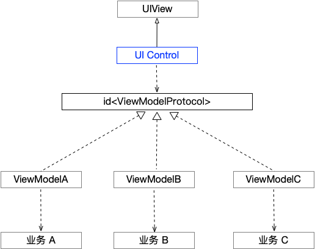

View-ViewModel
以View-ViewModel形式构建UI组件，MVVM，MVC等模式通用。
问题
UI组件作为APP内部复用概率最高的代码，更是复制粘贴的重灾区，其原因在于UI组中间包含大量的业务逻辑，导致一个UI组件复用到另一个业务下非常困难，主要体现在：
此时，MVVM模式模式应该要进入我们的视线了，在该模式中ViewModel的存在是不是很好的解决了上面的问题。我们知道在MVVM中，ViewModel向上为View提供展示数据（该数据已经在ViewModel中处理好了，View无需任何处理，只要展示即可），向下接受来自业务层的数据，处理相关的业务逻辑。
可以看出，ViewModel作为中间层很好的将业务与UI隔离。但MVVM，很多同学并不喜欢，觉得其中的Data-Binding很麻烦。
因此本Demo构建UI组件时用到的是View-ViewModel结构，并不要求一定是MVVM，在MVC模式下也可以使用。
同时我们采用的是面向接口的模式，View对外依赖的是接口（protocol） 而不是某个具体的ViewModel，每个UI组件其结构如下图：

如上图所示，若某个UI组件被多个业务复用，可以根据需求定义多个ViewModel以处理不同的业务逻辑，每个ViewModel都实现ViewModelProtocol协议为View提供数据。
通过ViewModel这个中间层很好的隔离了UI与业务逻辑，使UI复用性更好，不仅提高了开发效率，也规范了代码结构。
详见demo